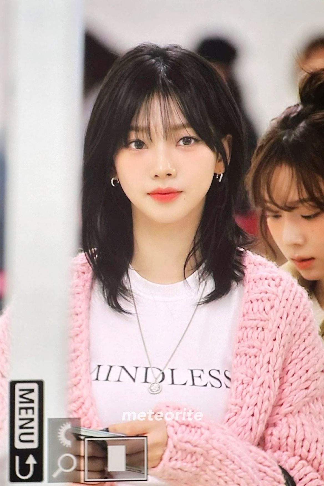
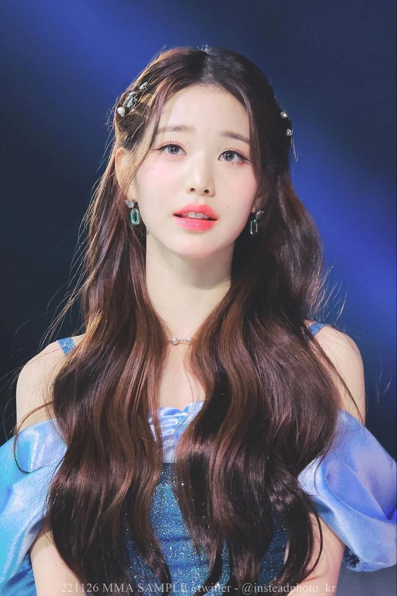
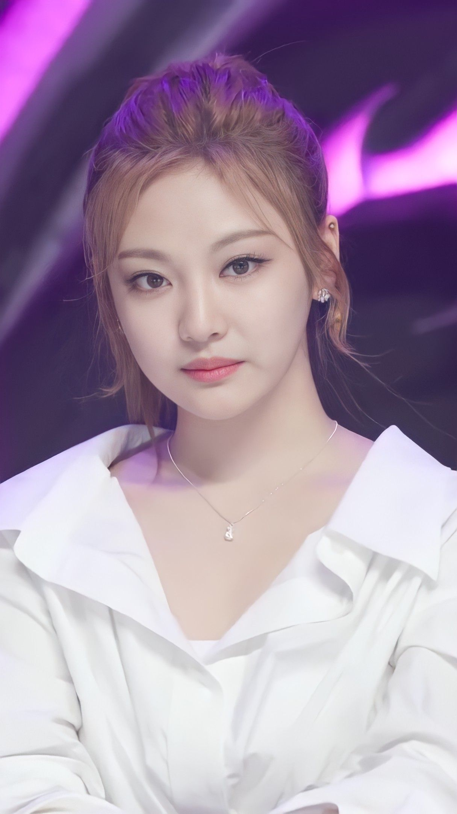

(30 Min)
Potongan rambut sederhana yang disesuaikan dengan keinginan dan gaya Anda.
(45 Min)
Potongan rambut berlapis untuk memberikan volume dan bentuk yang lebih dinamis.
(40 Min)
Potongan rambut bob klasik atau modern yang memberikan kesan segar dan stylish.
(35 Min)
Potongan pendek yang berani, cocok untuk penampilan yang chic dan edgy.
(15 Min)
Layanan potong poni untuk penampilan yang lebih segar dan gaya.
(60 Min)
Penataan rambut dengan blow-dry untuk hasil akhir yang bervolume dan berkilau.
(75 Min)
Penataan rambut dalam gaya updo untuk acara spesial seperti pesta atau pernikahan.
Basic Haircut (30 Min): Rp150,000
Layered Cut (45 Min): Rp200,000
Bob Cut (40 Min): Rp180,000
Pixie Cut (35 Min): Rp170,000
Bang Trim (15 Min): Rp70,000
Blowout Styling (60 Min): Rp250,000
Updo Styling (75 Min): Rp300,000


